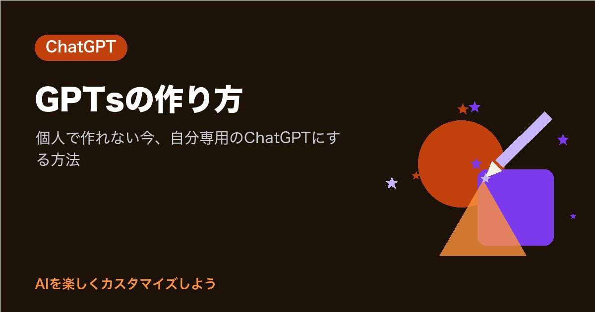

GPTsの作り方｜個人で作れない今、自分専用のChatGPTにする方法

「自分専用のChatGPTを作ってみたい」と思って、GPTsの作り方を探していませんか。
先に、あなたの時間を節約できる大事なお知らせからです。2026年10月23日に公式ヘルプを確かめたところ、Free・Go・Plus・Proの個人アカウントでは、新しいGPTの作成と公開はできなくなっています。GPTsを作れるのは、Business・Enterprise・Eduのワークスペースで、設定と権限で許可されている人です。
それでも、無料のままでも「自分専用」に近いChatGPTは作れます。この記事では、GPTsを作る手順と、個人アカウントで今日からできる代わりの方法を、公式ヘルプで確かめた内容でまとめました。
確認日：2026年10月23日（公式のヘルプで確認。画面や名前は変わることがあります）
まず、いまのGPTsの状況を整理
公式ヘルプ（GPTの作成と編集、GPTs in ChatGPT、無料版のよくある質問）で確かめた内容を表にしました。
| 項目 | 個人アカウント（Free・Go・Plus・Pro） | Business・Enterprise・Edu |
|---|---|---|
| GPTsを使う | 使える（ログインが必要） | 使える |
| 新しいGPTを作る | できない | ワークスペースの設定と権限で許可されていればできる |
| GPTを公開する | できない | 設定と権限による |
| 以前に作ったGPTを編集 | プランと権限の条件を満たせばできる | 設定と権限による |
さらに、公式ヘルプの冒頭には、カスタムGPTの提供終了を予定していること、代わりにワークフローを「プラグイン」へ移すことをすすめる、というお知らせがあります。
- 対象のEnterpriseワークスペースでは、2026年12月11日に提供終了の予定
- 移行の仕組みは2026年9月17日の提供開始予定（すべてのアカウントで同時に使えるとは限らない）
- その他のプランも同じスケジュールに従う予定で、アカウントごとのお知らせを確認するよう案内されている
「これから時間をかけて作る」より、「いまあるGPTsを上手に使い、自分専用の部分はほかの方法で作る」ほうが、あなたの手間は少なくてすみそうです。
無料でできること1：GPTsを探して使う
無料版のよくある質問には、無料版でできることとして「GPTを見つけて使う」が挙がっています。
使い方
- ChatGPTのサイドバーで「GPT を探す」を開く（または chatgpt.com/gpts を開く）
- 気になるGPTを選び、説明や会話のきっかけを見る
- メッセージを送って話しはじめる
ウェブ版では、ふだんの会話の中で「@」と入力してGPTを呼び出せます。公式ヘルプによると、次のメッセージがそのGPTに届き、会話の流れはそのまま続きます。この「@」での呼び出しは、iOS・Androidのアプリにはないと書かれています。
無料版での回数
公式ヘルプでは、無料版のGPTの利用は、無料版のモデルの上限にしたがうと説明されています。上限に達すると、リセットされるまでGPTは一時停止し、リセットの時刻はChatGPTの画面に表示されます。
知っておくと便利なこと
- GPTとの会話では、あなたの保存したメモリ、カスタム指示、以前の会話は使われない（毎回まっさらから始まる）
- GPTを作った人は、あなたとGPTの個々の会話を見ることはできない
- GPTが外部のアプリやAPIを使う場合、入力の一部が外部のサービスに送られることがある
最後の点は、会社の資料を扱うときに大事です。外部とつながるGPTに社外秘の情報を入れないようにしておくと安心です。
無料でできること2：プロジェクトで「自分専用」を作る
「自分の書き方を覚えた、仕事用のChatGPTがほしい」という願いは、プロジェクトでかなり近い形にできます。公式ヘルプによると、プロジェクトは関連するチャット・ファイル・指示をまとめて管理できる場所で、ログインしたChatGPTユーザーがプランに応じて使えます。プロジェクトの共有は、無料版でも使えると書かれています。
作り方
- サイドバーで「新しいプロジェクト」を選ぶ
- 名前を入れ、アイコンと色を選ぶ
- その他のオプションメニュー（•••）→「プロジェクト設定」で、指示を書く
- 参考にしてほしい資料（PDF、スプレッドシート、文書など）を追加する
プロジェクトの指示は、そのプロジェクトの中だけで使われ、ふだんのカスタム指示より優先されます。アップロードできるファイル数はプランで変わり、公式ヘルプの共有の上限では、無料版はファイル5個・共同作業者5人までと書かれています。
GPTsと見比べると、こんな関係です。
| GPTsの欄 | プロジェクトでの置きかえ |
|---|---|
| 指示 | プロジェクト設定の指示 |
| ナレッジ（ファイル） | プロジェクトに追加するファイル |
| 会話のきっかけ | よく使う頼み方をメモしておく |
| 共有 | プロジェクトの共有 |
仕事用の例：「報告書つくり係」
| 指示に書くこと | 例 |
|---|---|
| 役割 | 印刷工場の品質報告書を下書きする係 |
| 書式 | 概要・経緯・原因・対策・今後の予定の順 |
| 表 | 対策は「内容・担当・期限」の表に |
| 言葉 | です・ます調、事実と推測を分ける |
| 迷ったら | 足りない情報は【 】で空けて質問する |
ファイルには、過去の報告書のひな形を1つ入れておくと、形がそろいやすくなります。
遊び用の例：「週末ごはん係」
- 家族4人分のレシピを、材料・手順5ステップ以内で
- 冷蔵庫の中身を伝えたら、買い足しが少ない案から
- 最後に「今日のひとことおすすめ」を添える
指示の書き方の例は、ChatGPTのカスタム指示テンプレート｜コピペで使える例と書き方にもまとめています。
無料でできること3：カスタム指示と性格で全体を自分好みに
プロジェクトの外でも、カスタム指示と性格（基本のスタイルとトーン）で、ふだんのChatGPTを自分用にできます。カスタム指示はすべてのプランで使え、FreeとGoは1,500文字まで書けます。くわしい手順はChatGPTのカスタマイズのやり方｜性格・口調・カスタム指示を自分用にで紹介しています。
会社のワークスペースで作る手順
あなたの会社がChatGPT Business・Enterprise・Eduを使っていて、GPTを作る権限があるなら、次の手順で作れます。作成と編集はウェブ版で行い、モバイルアプリでは使うことはできても作ることはできません。
- サイドバーで「GPT を探す」を開く（または chatgpt.com/gpts）
- 「作成」を選んで、GPTビルダーを開く
- 作り方を選ぶ。「対話型ビルダー」は、作りたいものを話すと下書きを手伝ってくれる。「設定画面」は、各欄を自分で編集する
- 名前・説明・会話のきっかけ・指示を書く
- 必要ならナレッジ（ファイル）を追加し、機能を選ぶ
- プレビューで試して、準備ができたら「作成」を選ぶ
設定できる主な欄（公式ヘルプより）
| 欄 | 内容 |
|---|---|
| 名前・説明 | 検索結果や共有リンクに表示される |
| 会話のきっかけ | 開いたときに出るプロンプトの例 |
| 指示 | 動作・トーン・避けることを決める。すべての会話に適用 |
| ナレッジ | 参考資料のファイル。1つのGPTに最大20個、各ファイル最大512MB |
| 推奨モデル | 新しい会話のときに提案するモデル |
| 機能 | ウェブ検索、画像生成、canvas、Code Interpreterとデータ分析、アプリ |
| アクション | 定義した外部APIにつなぐ（アプリとアクションは同時に使えない） |
公式ヘルプでは、ルールや口調は「指示」に、参考資料は「ナレッジ」に入れること、禁止事項の長いリストより肯定的で具体的な指示を優先すること、機能を足す前に指示を明確にして例を加えることがすすめられています。編集中の内容は下書きに自動保存され、•••メニューからバージョン履歴を見て、前の版に戻すこともできます。
会社のワークスペースでは、管理者がGPTの作成や共有の範囲を決めていることがあります。画面に「作成」が見当たらないときは、社内の管理者に聞いてみると早いでしょう。
これからの移行先「プラグイン」も見ておく
公式ヘルプがGPTsの移行先としてすすめているのが、プラグインです。プラグインは、再利用できる指示（スキル）と、連携アプリなどをまとめて、作業を進めやすくするしくみと説明されています。
- プラグインのディレクトリは、ChatGPTの各プランで使える
- サイドバーの「プラグイン」から探せる（ウェブ・デスクトップ・モバイル）
- 個々のプラグインを入れたり使ったりできるかは、プラン・ワークスペース・役割・地域・含まれる機能による
- 「Plugin Creator」を入れて、会話しながら自分のプラグインを作る方法も紹介されている
個人アカウントで、どこまで自分のプラグインを作れるかは、公式ヘルプでもプランや環境によると書かれています。あなたの画面のサイドバーに「プラグイン」があるか、一度のぞいてみると、使えるものが分かります。
以前にGPTを作った人へ
公式ヘルプによると、以前に作ったGPTは引き続き使えて、プランと権限の条件を満たせば編集もできます。サブスクリプションを変更・解約した場合も、作ったGPTは使い続けられますが、編集できるかはプランと権限によります。提供終了のお知らせが届いたときに慌てないよう、いまのうちにGPTの指示を書き写しておくと、プロジェクトやプラグインへ移すときに役立ちます。
確かめた公式の情報
- GPT の作成と編集（OpenAI ヘルプセンター）
- GPTs in ChatGPT（OpenAI Help Center・英語）
- Sharing and publishing GPTs（OpenAI Help Center・英語）
- ChatGPT Free Tier FAQ（OpenAI Help Center・英語）
- ChatGPT のプロジェクト（OpenAI ヘルプセンター）
- Plugins in ChatGPT（OpenAI Help Center・英語）
まとめ
- 2026年10月23日時点で、Free・Go・Plus・Proの個人アカウントでは新しいGPTを作れない
- GPTを作れるのは、Business・Enterprise・Eduのワークスペースで許可されている人。作成はウェブ版で
- 無料版でも、GPTsを探して使える。ウェブ版では「@」で会話の中に呼び出せる
- 自分専用に近いものは、プロジェクトの指示とファイルで作れる。プロジェクトの指示はふだんの指示より優先される
- カスタムGPTは提供終了の予定があり、移行先としてプラグインがすすめられている
まずは今日、「GPT を探す」を開いて、あなたの仕事に役立ちそうなGPTを1つ試してみませんか。気に入った使い方は、プロジェクトに指示として写しておくと、あなた専用の形で残せます。最後まで読んでくださって、ありがとうございます。あなたなら、どんな「自分専用のChatGPT」を作ってみたいですか？
まずは1つのAIで、あなたの呼び名か口調を1つだけ設定してみませんか。次の会話から、AIの返事が少し“あなた向け”に変わるのを感じられます。
あなたなら、AIにどんな話し方をしてほしいですか？
最後まで読んでくださり、ありがとうございました。